VLM Council Debate Evaluation Report
1. Ground-truth statistics
Country accuracy: 63.0% (95% CI 58.7% - 67.1%).
Haversine error (km)
| Statistic | Value (km) |
|---|---|
| Median | 435 |
| Mean | 1,571 |
| P25 | 188 |
| P75 | 1,169 |
Directional bias tests
| Test | Mean | p-value | Significant | Interpretation |
|---|---|---|---|---|
| North bias | 1.9258 | 0.0003 | yes | Significant north bias (p=0.0003, mean=+1.93°) |
| East bias | -0.6379 | 0.7061 | no | No significant bias (p=0.7061, mean=-0.64°) |
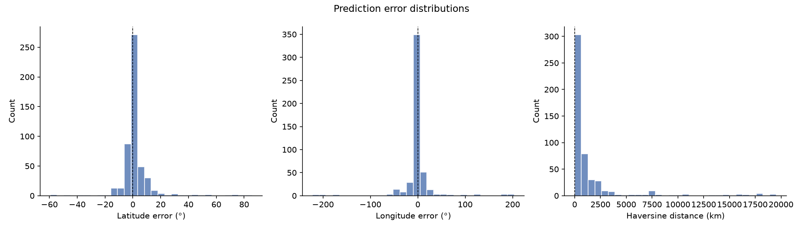
Figure: lat/lng/haversine error distributions.
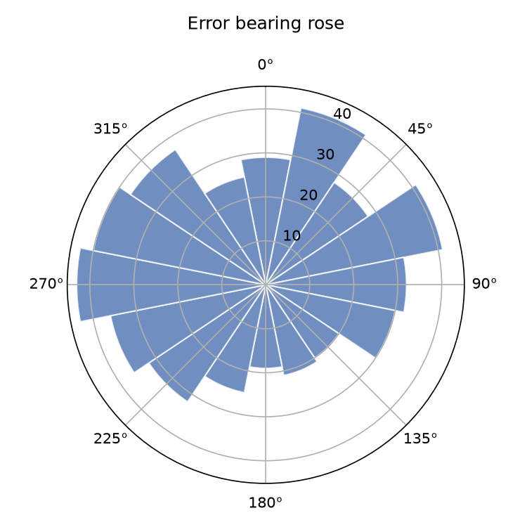
Figure: direction of prediction errors.
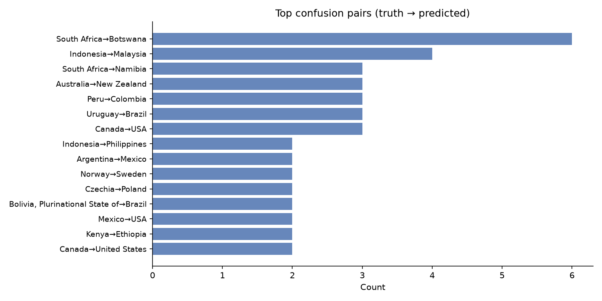
Figure: top confusion pairs (truth -> predicted).
Top confusion pairs (30)
| Truth | Predicted | Count |
|---|---|---|
| South Africa | Botswana | 6 |
| Indonesia | Malaysia | 4 |
| South Africa | Namibia | 3 |
| Australia | New Zealand | 3 |
| Peru | Colombia | 3 |
| Uruguay | Brazil | 3 |
| Canada | USA | 3 |
| Indonesia | Philippines | 2 |
| Argentina | Mexico | 2 |
| Norway | Sweden | 2 |
| Czechia | Poland | 2 |
| Bolivia, Plurinational State of | Brazil | 2 |
| Mexico | USA | 2 |
| Kenya | Ethiopia | 2 |
| Canada | United States | 2 |
| Panama | Puerto Rico | 2 |
| Panama | Dominican Republic | 2 |
| Mexico | Brazil | 2 |
| Germany | Poland | 2 |
| Latvia | Lithuania | 2 |
| Türkiye | Spain | 2 |
| Russian Federation | Ukraine | 2 |
| Chile | Peru | 2 |
| Botswana | Senegal | 2 |
| Mexico | Thailand | 2 |
| Kenya | Rwanda | 2 |
| Kyrgyzstan | Azerbaijan | 1 |
| Malaysia | Taiwan | 1 |
| Serbia | Bosnia and Herzegovina | 1 |
| Portugal | Spain | 1 |
Per-agent metrics
Initial round (R1) accuracy
| Agent | Top-1 | Top-3 | Coverage | n |
|---|---|---|---|---|
| linguistic | 16.8% | 18.2% | 21.2% | 500 |
| landscape | 63.2% | 79.4% | 100.0% | 500 |
| botanics | 62.8% | 77.0% | 99.2% | 500 |
| regulatory | 55.8% | 68.4% | 88.0% | 500 |
| meta | 62.2% | 73.0% | 92.8% | 500 |
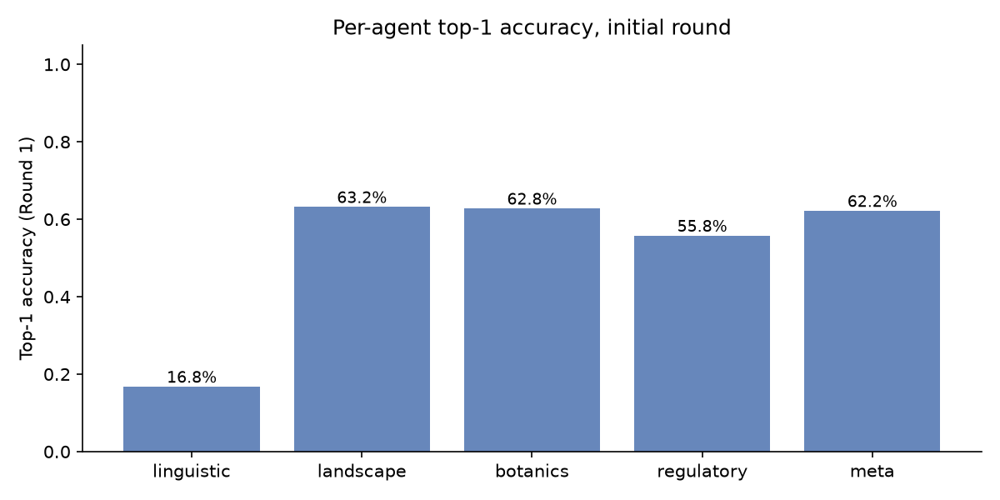
Figure: per-agent initial round top-1 accuracy.
Debate participation
| Agent | Debated | Revised | Won | Correct side | Wrong side | Rev. rate | Win rate |
|---|---|---|---|---|---|---|---|
| linguistic | 13 | 9 | 4 | 2 | 11 | 69.2% | 30.8% |
| landscape | 66 | 44 | 15 | 17 | 49 | 66.7% | 22.7% |
| botanics | 66 | 35 | 16 | 17 | 49 | 53.0% | 24.2% |
| regulatory | 118 | 19 | 80 | 39 | 79 | 16.1% | 67.8% |
| meta | 39 | 20 | 12 | 14 | 25 | 51.3% | 30.8% |
Judge per-agent scores
| Agent | n | Role adher. | Hallucination (lower is better) | Arg. quality (higher is better) | Rev. justification (higher is better) | Debate contrib. (higher is better) |
|---|---|---|---|---|---|---|
| linguistic | 500 | 98.6% | 0.004 | 0.654 | 0.808 | 0.538 |
| landscape | 500 | 100.0% | 0.037 | 0.750 | 0.828 | 0.623 |
| botanics | 500 | 100.0% | 0.037 | 0.689 | 0.731 | 0.561 |
| regulatory | 500 | 100.0% | 0.021 | 0.779 | 0.787 | 0.640 |
| meta | 500 | 100.0% | 0.021 | 0.707 | 0.743 | 0.593 |
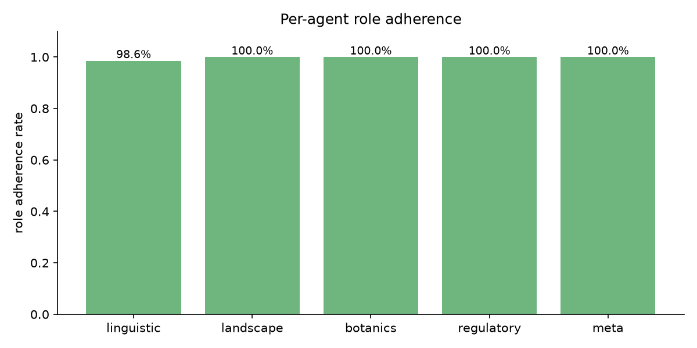
Figure: role adherence per agent.
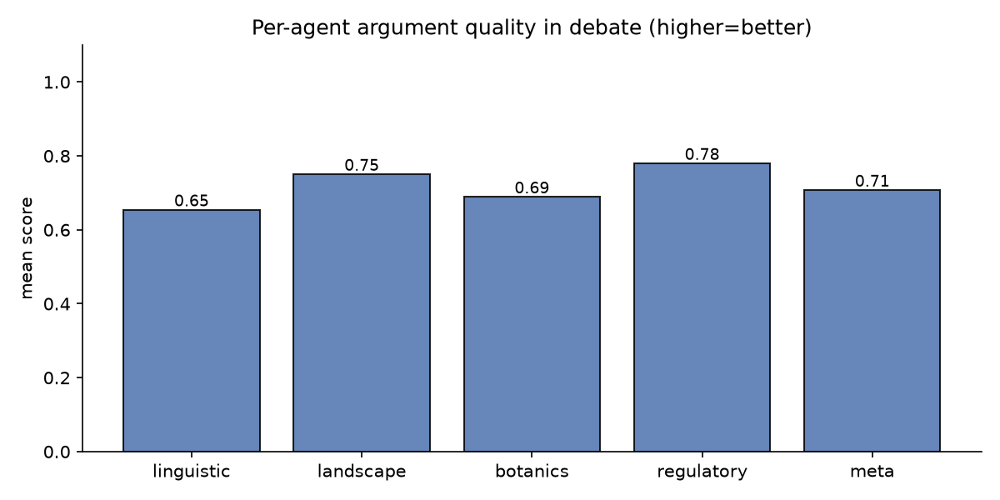
Figure: argument quality per agent.
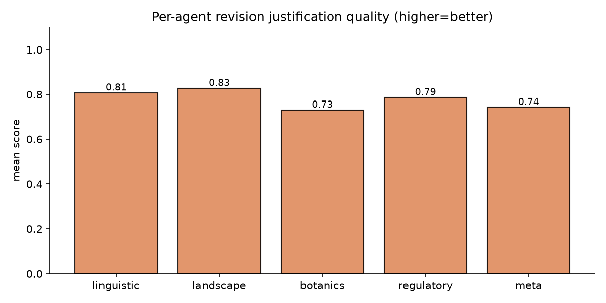
Figure: revision justification per agent.
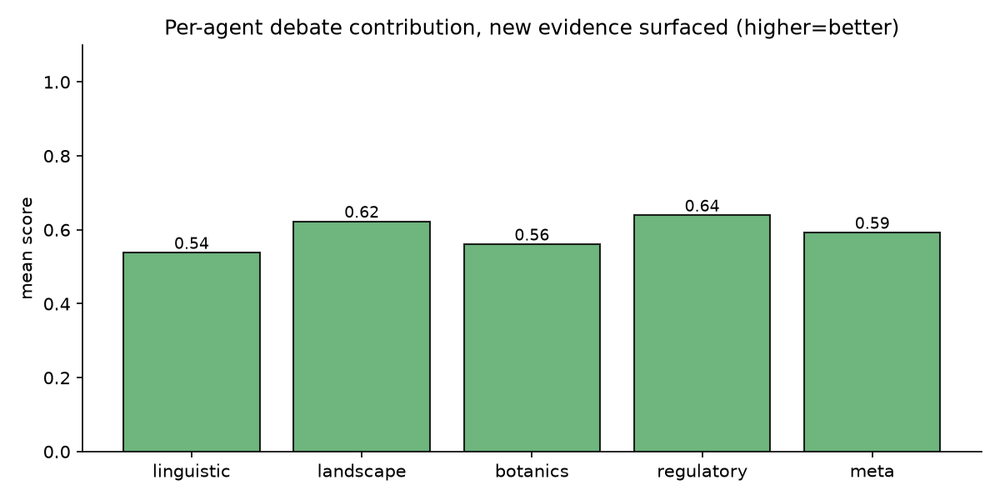
Figure: debate contribution per agent.
2. Approach dynamics
Pairings are the adversarial exchanges triggered when agents disagree. Debate rate is the share of images that reached at least one debate round; revision rate is the share of pairings in which an agent revised its answer.
Rounds distribution
| Rounds | Count | Share |
|---|---|---|
| 0 | 413 | 82.6% |
| 1 | 66 | 13.2% |
| 2 | 16 | 3.2% |
| 3 | 5 | 1.0% |
Termination reasons
| Reason | Count |
|---|---|
| consensus | 442 |
| weak_dissent | 24 |
| stalemate | 15 |
| All agents with confidence >= 'medium' agree on the same top country. | 7 |
| max_rounds_reached | 5 |
| Only one agent disagrees and has 'low' confidence. | 3 |
| All agents have low or speculative confidence; no strong evidence exists to drive a debate. | 1 |
| Only one agent disagrees (or in this case, is the sole provider of a specific lead) and all other agents have low or speculative confidence. | 1 |
| Only one agent (or a group of agents) disagrees and has 'low' or 'speculative' confidence. | 1 |
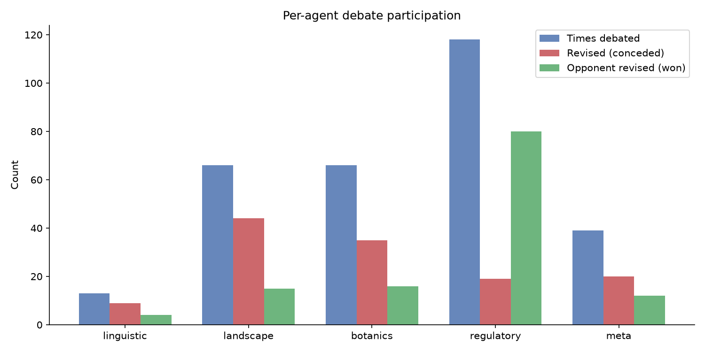
Figure: per-agent debate participation.
Convergence & ground-truth effect
Ground-truth pairing classification (151 debated pairings)
| Category | Count | Share |
|---|---|---|
| Constructive (truth-bearer convinced the wrong agent) | 37 | 24.5% |
| Destructive (truth-bearer abandoned the truth) | 37 | 24.5% |
| Stand-correct (truth-bearer held the line) | 15 | 9.9% |
| Both wrong (no truth-bearer) | 62 | 41.1% |
3. LLM-as-judge verdicts
Verdicts: 500 / 500.
System-level scores
| Metric | Mean | Median | Stdev | n |
|---|---|---|---|---|
| Judge synthesis quality | 0.656 | 0.500 | 0.304 | 500 |
| Moderator pairing quality | 0.768 | 1.000 | 0.251 | 500 |
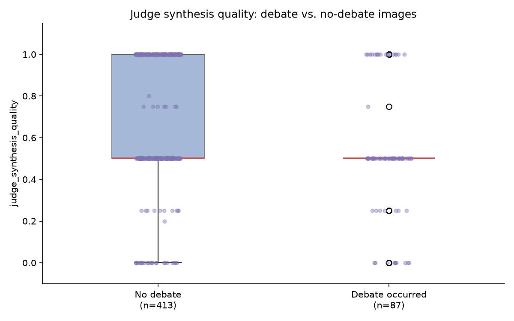
Figure: judge synthesis quality, debate vs. no-debate images.
Hallucination examples
linguistic - 8 flagged claims
| Image | Score | Hallucinated claim |
|---|---|---|
| HF1MKwIFNCNb4FdM_3 | 0.80 | The text 'Vilabonita' on the billboard is a specific residential project name located in Colombia. |
| HF1MKwIFNCNb4FdM_3 | 0.80 | Elegi confort y calidad de vida a solo 10 minutos de... Vilabonita |
| IozkbMt8zbdH9XCv_5 | 0.00 | The use of English in this specific institutional format is extremely common in India |
| IozkbMt8zbdH9XCv_5 | 0.00 | The term 'College of Engineering' is a standard naming convention for Indian technical instit |
| Y2QhKx7sks9MExvw_1 | 0.20 | The wording on the yellow sign is in Italian |
| z2mhsiTu4DYWixQf_5 | 1.00 | The sign on the left contains the word 'سورية' (Syria/Syrian) |
| z2mhsiTu4DYWixQf_5 | 1.00 | The sign on the left explicitly contains the word 'سورية' (Syria) |
| z2mhsiTu4DYWixQf_5 | 1.00 | The sign on the left explicitly contains the word 'سورية' (Syria), which serves as a hard linguistic constraint |
landscape - 10 flagged claims
| Image | Score | Hallucinated claim |
|---|---|---|
| 4UvmdTHySo6AXW4M_5 | 0.50 | The vegetation and crop patterns are consistent with the Indo-Gangetic Plain. |
| 6fGwHxCTvCbaK77Q_4 | 0.25 | The combination of volcanic-looking slopes... is highly characteristic of the Azores archipelago. |
| 74bPHM081cMUaNKT_4 | 0.20 | The vegetation is consistent with tropical montane forests/shrublands found in the A [...] |
| 74bPHM081cMUaNKT_5 | 0.25 | The soil is dry and light-colored, consistent with the coastal or lowland regions of the Adriatic coast. |
| DKGAIVKGYnLWmMy9_5 | 0.20 | The road infrastructure is highly characteristic of rural Romania. |
| EEI3fwu4iZvPT2zP_1 | 0.25 | The combination of high-altitude plateau terrain, reddish-brown soil, and specific vernacular architecture with mud-plastered walls and corrugated metal roofs is highly characteristic of the Ethiopian Highlands. |
| EEI3fwu4iZvPT2zP_3 | 0.25 | The combination of reddish-brown oxisols (latosols), tropical vegetation including palm species, and the specific style of rural dirt roads and simple masonry housing with clay tile roofs is highly characteristic of the Brazilian interior or Northeast. |
| EEI3fwu4iZvPT2zP_5 | 0.25 | The soil appears sandy/loamy, typical of the North European Plain. |
| HLDekf7z49ovS9Y8_2 | 0.25 | The combination of lush tropical vegetation, hilly terrain, and the specific style of the red truck and haphazard electrical wiring is highly characteristic of the Western Ghats or Northeast India. |
| HVBiwFr2gEcM1dze_5 | 0.80 | The settlement pattern with distant industrial chimneys is common in the Delta re |
botanics - 10 flagged claims
| Image | Score | Hallucinated claim |
|---|---|---|
| 3OuVMcpGjmm0tVfG_5 | 0.50 | The combination of Washingtonia robusta (Mexican Fan Palm) and the arid-zone scrub vegetation is highly characteristic of Northern and Central Mexico. |
| 4UvmdTHySo6AXW4M_5 | 0.50 | The combination of a young cereal crop (likely wheat) and the specific scrubby, thorny hedge vegetation is common in the Indo-Gangetic plains. |
| 6fGwHxCTvCbaK77Q_4 | 0.25 | The combination of Cupressus macrocarpa (Monterey Cypress) hedges and Pinus radiata plantations on steep slopes is extremely characteristic of the Azores islands. |
| 74bPHM081cMUaNKT_2 | 0.25 | The vegetation consists of extremely sparse, xeric bunchgrasses and a near-total absence of the succulent diversity (such as Aizoaceae or Euphorbia) typically found in the South African Karoo. |
| 74bPHM081cMUaNKT_4 | 0.20 | The vegetation consists of dry savanna scrub and scattered broadleaf trees consistent with the Kenyan highlands or rift valley regions. |
| EEI3fwu4iZvPT2zP_1 | 0.25 | The vegetation consists of hardy, semi-arid highland scrub and broadleaf trees with a specific leaf density and growth habit characteristic of the Ethiopian Highlands. |
| EEI3fwu4iZvPT2zP_3 | 0.25 | The presence of fan palms (likely Sabal or Attalea species) used for fencing and the general tropical scrub vegetation are highly characteristic of the Brazilian Northeast (Sertão/Caatinga regions). |
| G3aNW5xo5JUCnAhB_2 | 0.50 | The presence of Delonix regia (Flamboyant tree) as a common urban ornamental is highly characteristic of Brazilian landscapes |
| HLDekf7z49ovS9Y8_2 | 0.25 | The combination of lush, tropical broadleaf vegetation and the specific growth habit of the large canopy trees is highly characteristic of the Western Ghats or Northeast India. |
| HVBiwFr2gEcM1dze_5 | 0.90 | The combination of intensive small-scale irrigation plots, reddish-brown alluvial soil, and the presence of date palms in the distance is highly characteristic of the Nile Delta or Valley. |
regulatory - 10 flagged claims
| Image | Score | Hallucinated claim |
|---|---|---|
| 1NJsXTxIF9GGMDxC_1 | 0.50 | The green fuel price totem displays 'A3C', which is a common designation for fuel types in Azerbaijan. |
| 3uP6lYo9pzx5Q0km_3 | 0.50 | The white roadside delineator posts with a red reflector on the right side and a black reflector on the left are highly characteristic of Polish road standards. |
| 6fGwHxCTvCbaK77Q_4 | 0.25 | The specific construction of the wooden fence posts on the left—specifically the height, spacing, and the way they are driven into the soft verge—is a standard rural [NZ] boundary. |
| 74bPHM081cMUaNKT_4 | 0.20 | The combination of a single yellow center line and white edge lines on a rural paved road is highly characteristic of Ethiopia. |
| 74bPHM081cMUaNKT_5 | 0.25 | The combination of concrete building styles, specific utility pole designs, and the general road quality is highly characteristic of urban outskirts in Albania. |
| 9NNxopqtafH8pTbN_3 | 0.30 | The license plate on the white car appears to be a standard US-style rectangular plate |
| EEI3fwu4iZvPT2zP_5 | 0.25 | The specific combination of road quality, utility pole style, and the presence of small white delineator posts is highly characteristic of rural Lithuania. |
| HLDekf7z49ovS9Y8_2 | 0.25 | The truck's color scheme and body style are highly characteristic of Indian commercial vehicles. |
| IozkbMt8zbdH9XCv_3 | 0.25 | The blue and white painted curbs are a very common regulatory marking for parking restrictions in Iranian urban and residential areas. |
| IozkbMt8zbdH9XCv_5 | 0.00 | The use of green and white painted curbs is a very common infrastructure standard in India |
meta - 10 flagged claims
| Image | Score | Hallucinated claim |
|---|---|---|
| 1NJsXTxIF9GGMDxC_1 | 0.50 | The green fuel price totem is characteristic of SOCAR (State Oil Company of Azerbaijan Republic) stations. |
| 3I4ZtihbhZy5qZzQ_5 | 0.00 | The combination of the specific white small truck (likely a Suzuki Carry or similar kei-style truck) and the prevalence of Mitsubishi pickups is very common in Thailand. |
| 3I4ZtihbhZy5qZzQ_5 | 0.00 | The style of the concrete perimeter walls topped with chain-link fencing and barbed wire is a frequent sight in Thailand. |
| 3I4ZtihbhZy5qZzQ_5 | 0.00 | The use of small utility trucks and the specific style of the blue metal gate and corrugated roofing are common in the Philippines. |
| 3uP6lYo9pzx5Q0km_3 | 0.50 | The delineator posts are white with a small rectangular reflector (red on the right, white/black on the left) and a distinct black band near the bottom, which is a highly specific meta for Poland. |
| 6fGwHxCTvCbaK77Q_4 | 0.25 | The specific asphalt texture... and the style of the wooden fence posts visible on the left... is highly characteristic of New Zealand. |
| 74bPHM081cMUaNKT_4 | 0.20 | The use of simple, untreated wooden utility poles with minimal hardware and the specific style of corrugated metal fencing seen on the left are very common in rural Colombian highlands. |
| EEI3fwu4iZvPT2zP_3 | 0.25 | The combination of red clay roof tiles (telhas coloniais) and the specific style of concrete utility poles with a diagonal support brace is very common in rural Brazil. |
| EEI3fwu4iZvPT2zP_5 | 0.25 | The concrete utility poles with a specific tapered shape and the style of the wooden picket fences are very common in rural Lithuania. |
| HLDekf7z49ovS9Y8_2 | 0.25 | The truck design, specifically the colorful cab and chassis style, is highly characteristic of Indian commercial vehicles. |
Geographic world maps
Per-country accuracy across 91 countries with truth. Macro-averaged TPR: 51.3%.
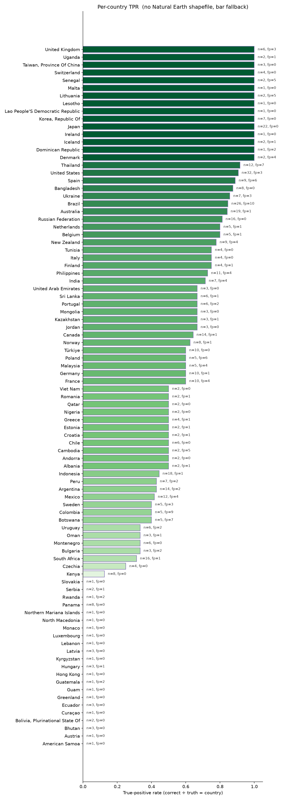
Per-country true-positive rate (green) with false-positive outlines (red).
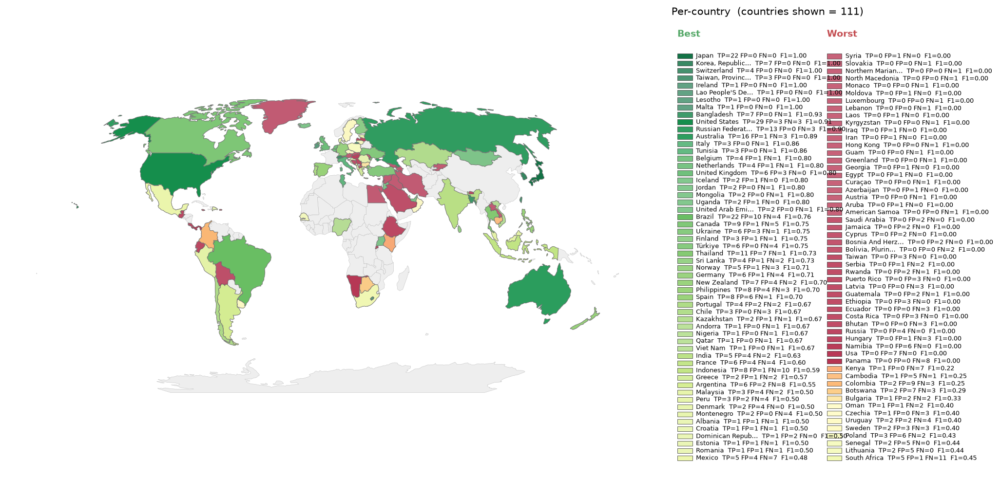
Per-country F1, divergent around the run's macro-F1. Green = above average, red = below.
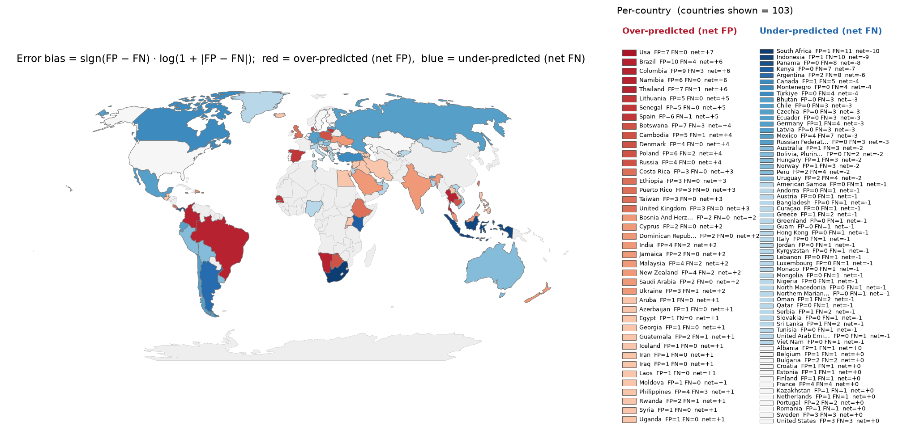
Per-country error bias (FP-FN)/(FP+FN). Red = over-predicted, blue = missed.